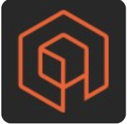
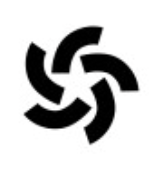
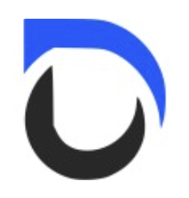

I'm currently studying computer science at the University of Waterloo, and have a strong interest in building impactful and challenging software.
A couple of transit related projects have recently been in the news, including CityNews, BlogTO, and Waterloo News.
In my free time, I enjoy reading, skateboarding, and playing basketball, which are often interests I incorporate into my projects.


